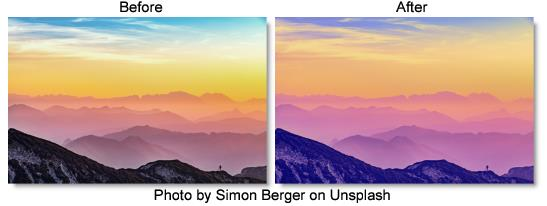

S_TriTone
Description
Performs an interpolation between three specified colors using the brightness of the image.
The S_TriTone filter comes from the Emmy award winning Boris FX Sapphire filter set.
Category
Grads/Tints.
Controls
Presets
To select a preset, pick one from the Presets window.
Color2
The color to use at the brighter image regions.
Color1
The color to use at the midtone image regions.
Color0
The color to use at the darker image regions.
Softness
The softness of the interpolation between the three colors. Use lower values for sharper contours between more solid regions of color.
Softness 12
Scales the softness of the interpolation between Color1 and Color2.
Softness 01
Scales the softness of the interpolation between Color0 and Color1.
Color2 At Bright
The image brightness value to replace with Color2.
Color1 At Bright
The image brightness value to replace with Color1. This value should normally be in between the other two.
Color0 At Bright
The image brightness value to replace with Color0.
Mix With Source
Interpolates between the result (0) and the original source (1).